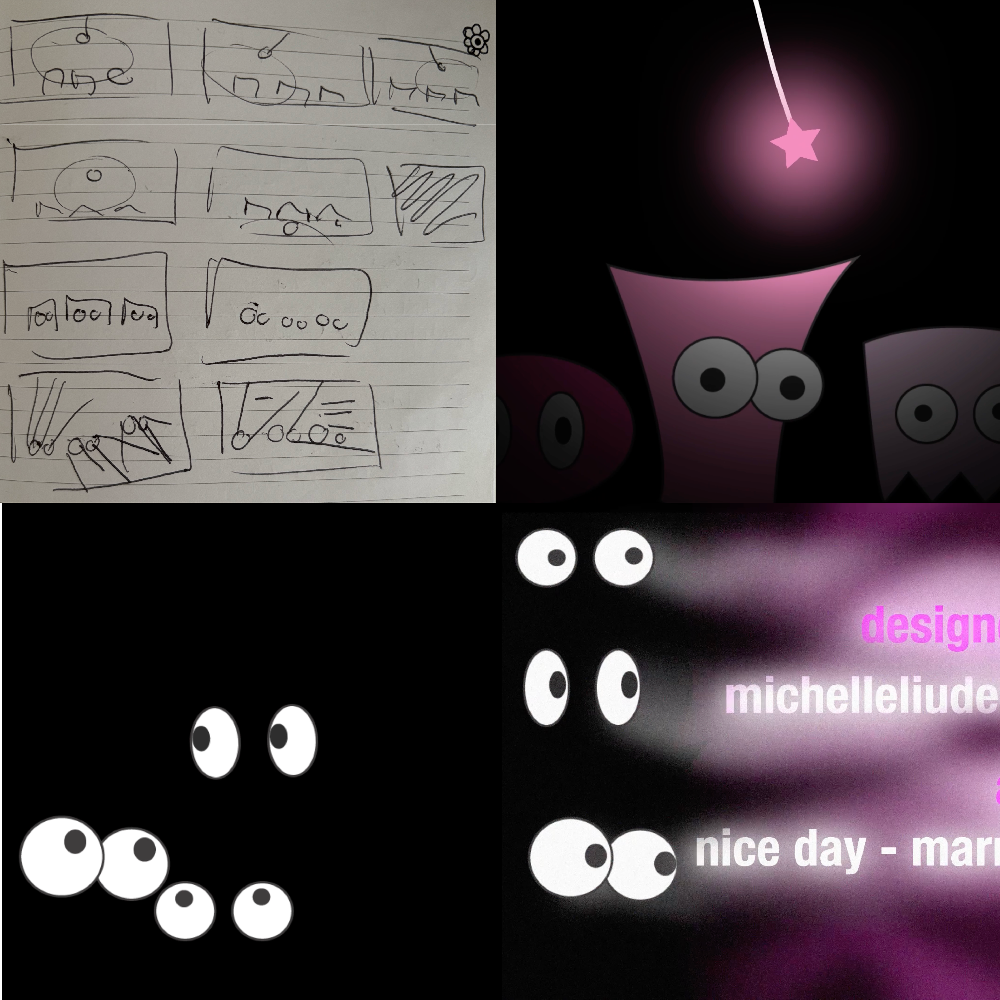

Watch AnimationPROJECTS.
Character Animation
Overview
A short animation reintroducing the characters from my flipbook in a new setting, recreating the classic “eyes in the dark” effect.
Research and inspiration
I gathered references and narrowed them to two effects to recreate: a swinging light and a flashlight text reveal. In particular I was inspired by the light pendulum animation by Sheikh Sohel and the Canon logo revealed by Ag Motion Designs.
Storyboarding, Asset Creation & Animating
Storyboarding has become an integral part of my process. It acts as a visual checklist and map, and I’ve found that skipping it causes me to drift from the core concept, even when the story evolves along the way.
As the characters already existed, I rebuilt them in Illustrator with every part on a separate layer, ready to animate independently in After Effects.
I divided the animation into sections. For each, I built the core motion first (such as the swinging light), then refined it by bending the rope for realism and adding lighting effects before moving on to the next section.
Feedback
Seeking outside opinions helped me catch details I had missed or dismissed, and made me less biased about what needed fixing. In particular it was helpful to affirm that the music choice matched the tone of the video and additionally, I had just turned down the opacity of the bodies to create the eye effects in the dark, meaning when the chracters walked over each other it was obvious the body layers had just been hidden. Feedback encouraged me to fix these details that I had initially ignored and this was a relatively easy fix as well by simply changing the colour of the bodies to match the background.
Final Evaluation
The most challenging part of the animation was getting the lighting effects right, tutorials were really helpful for this part, but since I was adapting these to my own design I had to experiment with the colour of the lighting effects and also using additional layers and masks since I was working with three characters. Finally, for future improvements I would like to spend more time making the motions a lot smoother particularly for the characters jumping and flipping around. I also kept both pupils on the same layer but as a portion of the video is solely focused on eyes, I would isolate these so I would have more control over their movements.
Tools: Adobe After Effects & Adobe Illustrator
Audio: marmixer